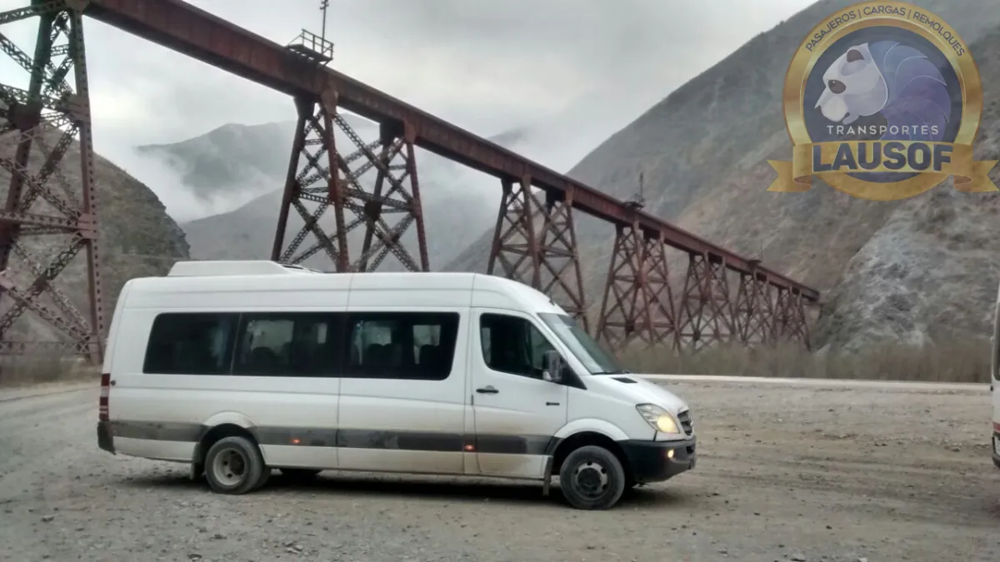
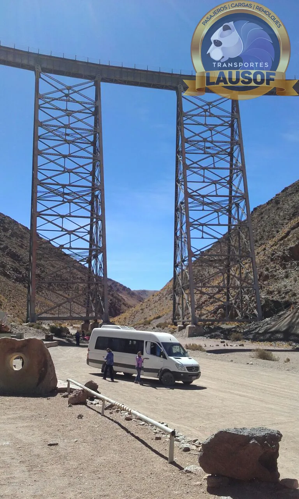

Traslado privado al Tren a las Nubes, de Salta a la estación de San Antonio de los Cobres
El pasaje Solo Tren se aborda en la estación de San Antonio de los Cobres, a 164 km de Salta, y no incluye cómo llegar hasta ahí. Te llevamos por la RN 51 en combi o en camioneta 4x4 con chofer, te esperamos mientras hacés el recorrido en tren y volvemos a Salta el mismo día.
Los dos pasajes del tren
Bus-Tren-Bus o Solo Tren: qué incluye cada uno
El tren vende dos modalidades con precios distintos. La diferencia está en cómo se llega a San Antonio de los Cobres.
Sale en bus desde la ciudad de Salta, con check-in a las 06:15 en la Plazoleta Antofagasta, frente a la estación de trenes. Incluye paradas en el camino, el tren hasta el viaducto La Polvorilla y la vuelta en bus a Salta.
Empieza y termina en la estación de San Antonio de los Cobres. El sitio del tren aclara que no incluye el traslado de llegada y salida: el pasajero tiene que llegar por sus propios medios. Ese es el tramo que hacemos nosotros.
Lausof SRL es una empresa de transporte independiente. No opera el Tren a las Nubes ni vende sus pasajes. Los días de salida, los horarios, las tarifas y las cancelaciones se confirman en el sitio del tren: trenalasnubes.com.ar. Datos verificados el 10/10/2026 en ese sitio; los días de salida cambian según la temporada.
El día del viaje
Cómo se arma el día con el pasaje Solo Tren
Los horarios del tren son los que publica su recorrido; los de la combi son una planificación con margen para llegar tranquilos, no tiempos medidos.
| Hora | Qué pasa |
|---|---|
| Alrededor de las 07:30 | Te buscamos en tu alojamiento de Salta y salimos por la RN 51 hacia Campo Quijano y la Quebrada del Toro. |
| 11:40 | Llegada a la estación de San Antonio de los Cobres para subir al tren. |
| 12:00 a 14:45 | Recorrido en tren: sale a las 12:00, llega al viaducto La Polvorilla a las 13:00, para media hora y vuelve a la estación a las 14:45. El chofer te espera en el pueblo. |
| Desde las 15:00 | Regreso a Salta por la misma ruta, con las paradas que quieras hacer. Llegada estimada a la ciudad entre las 18:00 y las 19:00. |
La RN 51
164 km de subida hasta casi 3.800 m de altura
El camino es el mismo que hace el bus del tren, pero en una unidad para tu grupo: parás donde quieras y el chofer conoce cada tramo.
De la ciudad de Salta a San Antonio de los Cobres hay unos 164 km por la RN 51, alrededor de 2 h 50 de manejo sin paradas (tiempo aproximado). Contando paradas para fotos y para aclimatarse, conviene calcular entre 3 y 4 horas.
Según Vialidad Nacional, entre Campo Quijano y San Antonio de los Cobres hay 134 km de pavimento. En verano, las crecidas de los arroyos pueden cortar la ruta algunos días: si pasa, lo sabemos antes de salir y te avisamos.
San Antonio de los Cobres está a unos 3.775 m y el viaducto La Polvorilla, a más de 4.200 m. El sitio del tren recomienda dormir bien la noche anterior, comer liviano y no tomar alcohol. Subimos sin apuro y con paradas.
Las mismas que hace el recorrido del tren —Campo Quijano, el viaducto El Toro, la formación Yacoraite, Santa Rosa de Tastil— u otras que elijas. En un traslado privado, el ritmo lo decide el grupo.
La unidad
Combi para grupos, 4x4 para pocos o para seguir viaje
Para familias grandes, grupos de amigos o contingentes de agencia: todos en la misma unidad, con chofer profesional.
Para grupos chicos o si después del tren quieren seguir por caminos de ripio de la Puna, por ejemplo hacia Salinas Grandes.
Si además de viajar en el tren quieren ver el viaducto La Polvorilla desde abajo, la unidad puede llegar hasta su base por camino de tierra. Lo armamos en la cotización.
Somos agencia de turismo habilitada y trabajamos con agencias que necesitan unidades con chofer para sus pasajeros de Solo Tren.
Cómo reservar
Primero el pasaje, después el traslado
Comprá el pasaje Solo Tren en el sitio del tren para la fecha que quieras y mandanos la fecha, cuántos viajan y dónde se alojan en Salta. Te respondemos con la cotización del traslado de ida y vuelta y el horario de búsqueda.
Si todavía no tenés fecha, escribinos igual: te decimos qué días tenemos unidades libres para que elijas el pasaje con el traslado ya resuelto.
Preguntas frecuentes
Lo que nos preguntan antes del tren
¿Ustedes venden los pasajes del tren?
No. Los pasajes se compran en el sitio del tren. Nosotros hacemos el traslado por ruta entre Salta y la estación de San Antonio de los Cobres.
¿Qué pasa si el tren se suspende por el clima?
El sitio del tren advierte que es una excursión de alta montaña y que puede cancelarse por condiciones climáticas adversas. Si pasa, la devolución o el cambio de fecha del pasaje se gestionan con el tren; el traslado lo reprogramamos con vos o hacemos igual el recorrido por la Quebrada del Toro, como prefieras.
¿Se puede ir y volver en el día?
Sí. Saliendo de Salta temprano a la mañana se llega a tiempo al tren de las 12:00 y se vuelve a la ciudad a última hora de la tarde.
¿Pueden buscarnos en el aeropuerto?
Sí. Conviene llegar a Salta el día anterior: el tren sale de San Antonio de los Cobres a las 12:00 y antes hay casi tres horas de ruta. El traslado del aeropuerto al alojamiento también lo hacemos nosotros. Ver traslados y excursiones en Salta.
¿Emiten factura?
Sí. Somos Lausof S.R.L., CUIT 30-71146774-9, y emitimos factura A.
Quiénes somos
Más de una década trabajando en la Puna
Lausof SRL hace transporte de pasajeros desde 2010 y conoce la RN 51 por años de trabajo en la Puna salteña. Habilitación CNRT N.º 60284. Conocé la empresa.



Relacionado: turismo en Salta y Jujuy · Semana Santa en Salta y Jujuy · traslado de Salta a San Antonio de los Cobres · alquiler de camionetas 4x4.
Actualizado el .
¿Ya tenés el pasaje Solo Tren?
Contanos la fecha, cuántos viajan y dónde se alojan. Te respondemos con la cotización del traslado en el día.